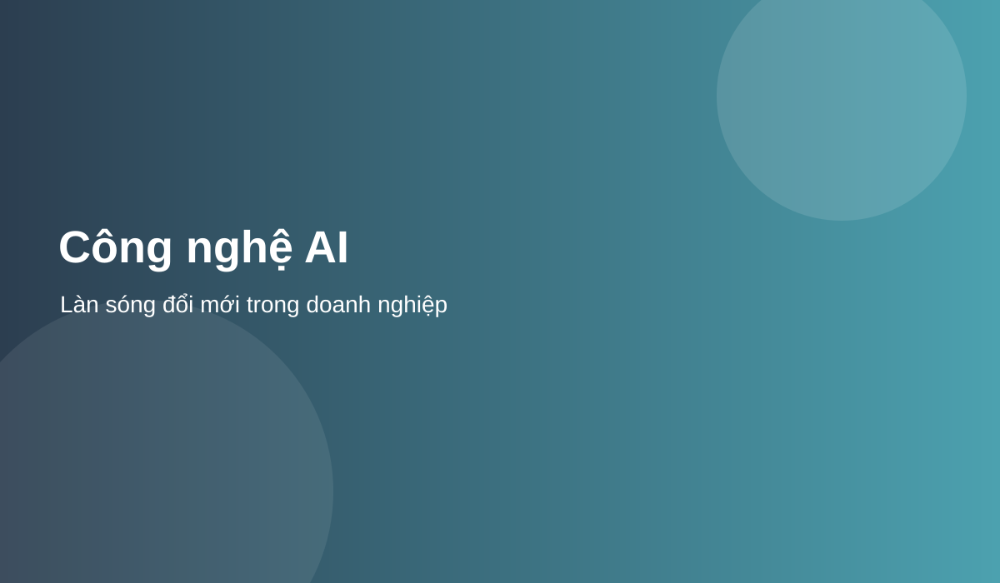
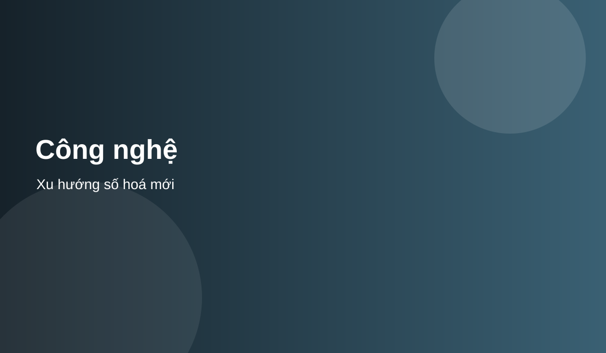
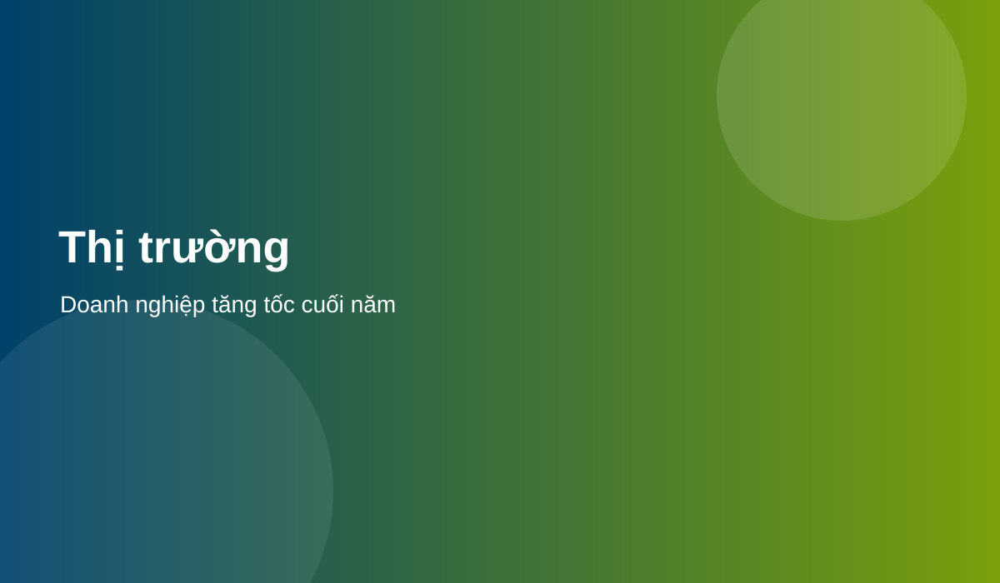
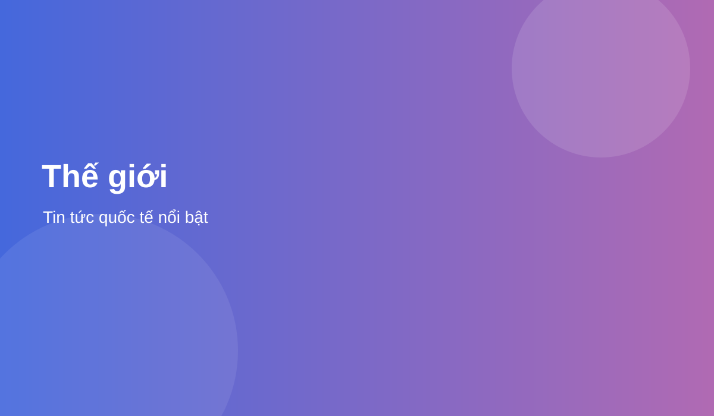

Công nghệ

Công nghệ
AI trở thành trợ lý quen thuộc trong nhiều bộ phận doanh nghiệp
Không chỉ hỗ trợ viết nội dung, AI còn được áp dụng cho phân tích dữ liệu, kiểm thử phần mềm và tự động hoá quy trình.

AI
Doanh nghiệp xây dựng trợ lý AI riêng để bảo vệ dữ liệu nội bộ
Mô hình AI nội bộ đang được quan tâm nhờ khả năng kiểm soát dữ liệu và tuỳ biến quy trình.
Phần mềm
Công cụ hỗ trợ lập trình bằng AI bước vào giai đoạn cạnh tranh mới
Nhiều nền tảng tập trung vào khả năng hiểu toàn bộ dự án thay vì chỉ gợi ý từng đoạn mã.

Chuyển đổi số
Dữ liệu trở thành tài sản chiến lược của doanh nghiệp
Việc chuẩn hoá dữ liệu giúp các hệ thống tự động hoá và AI hoạt động chính xác hơn.

Quốc tế
Công nghệ mới tiếp tục tác động mạnh tới thị trường lao động toàn cầu
Doanh nghiệp đang điều chỉnh kỹ năng tuyển dụng và chương trình đào tạo nhân lực.